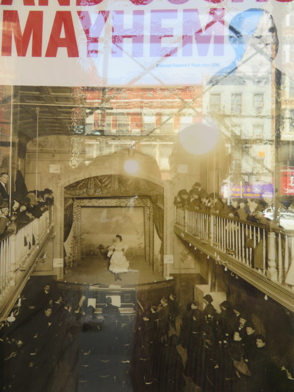
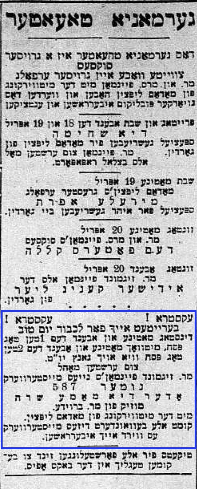

25 December 12th, 1946
This article is not available from the National Library of Israel. The article was obtained from the New York Public Library’s microfiche archives.
The music halls of yesteryear – The atmosphere of pub and theater. – “Yes” and “No” in the Hebrew Actors' Union.
Before I tell you further about the new turn of events that my life on took on the Yiddish stage after I settled in New York, it’s necessary to talk a little bit about the Yiddish music halls, which were then very much in vogue. This is a separate chapter all on its own, so it’s worth mentioning a few things that have long been forgotten.

In the year that Edelstein and Thomashefsky brought me down to New York to play in the People’s Music Hall1, there were no more than four Yiddish theaters where plays were performed. But there was an abundance of music halls, or “Yiddish varieties” as they were called then. In just one year’s time, ten or twelve music clubs opened. In them, sitting at a little table and drinking a glass of beer, you could listen to Yiddish songs couplets, or you could watch dramatic one-act plays or sketches that the actors pulled out nowhere and hastily threw together, and each one they played was a little different because each actor played to his own strengths and ideas, adding whatever lines occurred to him…
These music hall were very popular with the general public, and it was no wonder, because they played and sang to appeal to the crowd’s2 tastes, and quite a few songs were of the style with a lot of well-known insinuations3. The tickets were cheap, you could get in there whenever you wanted, you could drink as much beer as you could, and when you weren’t totally sober, you enjoy singing at the top of your lungs together with the actors on stage, and it was lively and cheerful.
All in all, the music hall atmosphere was a blend of a pub and a theater, and the Yiddish theater had to compete with them. The theaters had to take this competition very seriously, because the audiences really enjoyed the music halls.
And there were already a few writers who specialized in writing songs for all the music halls. For a few dollars, you could buy a lttle ditty from them. And the most skilled among them were none other than the excellent three men - Louis Gilrod, Itzhik Reingold and Isidore Lillian. They could have written a song about anything in the world, and a lot of their songs were very sentimental, and the people who loved their songs thoroughly enjoyed them. In general, a lot of their songs were about illicit love affairs. These songs were always a big hit with audiences, who had a grand time drinking beer at their little tables. So that you can have an idea of what these kind of songs were like, I’ll give you an example of one of Itzhik Reingold’s songs, which was called “My dear yukel4, you.” It’s not worth giving the whole song, only just part of it, which told of an illicit affair:
He gave himself over too much
To lust and love…
And he immediately fall in love with someone else’s wife.
The husband senses something and figures it out,
and burning with jealousy,
He catches them together and sings to them this song:
Oh, you, you, my dear yunkel you,
You’re sneaking around with a stranger’s woman?!
Who indeed needs a scolding…
Thief, you are running around with my wife?
You, you, my dear loser/buffoon you,
You’re going to get a smack,
Because you are a loser/buffoon, you…
And a fool must suffer…
There were also songs that lamented that these days were not like the days of old, and you could no longer get a “schooger beer” for a nickel. And one little ditty I remember went like this:
These aren’t the days of old!
Where you could get a schooner for a nickel,
And a “free lunch”5 was a delight.
Now a glass of beer tastes of castor oil,
and schnapps6 tastes like apple kvass.
Ech, these aren’t the days of old.
People really enjoyed these kinds of songs. They licked their fingers7 with these songs, and in these odd sort of combinations of pub and theaters performed Yiddish actors who later earned a name for themselves on the Yiddish stage and some became very famous.
Among those actors who played and sang in the People’s Music Hall, which was located on the Bowery, was the actress Clara Young who later became a star in the Yiddish theater world. When she, together with her husband Boaz Young, traveled all around Europe playing in operettas that were specially written for her, she made a big splash everywhere she went, and the greatest theater connoisseurs really loved her. Even in Moscow and in Saint Petersburg her performances were a big hit, and famous people who were never previously interested in Yiddish theater came to see her sang her praises.
Also, Charlie Cohan, Katzman, Baratz, Wexler and more who later held quite honorable places on the Yiddish stage and excelled in fine roles, played together with me on the stage of the People’s Music Hall, one of the “Yiddish varieties” as they were so-called.
Later two other lyric writers came on the scene - Meyerowitz8 and Smulewitz9. Meyerowitz made a name for himself with his song "Yisrolik, Kum Aheym"10, and Smulewitz became famous with his song “A brivele der mamen”11. Both songs were sung not only in America, but everywhere where there were Jews.
The entire atmosphere in the music halls where they performed sketches and sang songs wasn’t one where they really created shows of substance. Even actors with talent and ambition couldn’t really accomplish anything big, because everything was thrown together so hastily and because, above all, they had to entertain the audience - who more often than not were far from sober. In such an atmosphere, the audiences didn’t pay attention to talent, and those actors who really had talent had to play to the lowest common denominator12.

After the season in People’s Music Hall, where I became a darling of the audience with my playing and singing and also my dancing, I wanted to go to Philadelphia to be with my family Pesach. But just then the leading actor Sigmond Feinman had written play called Nomer 587, or Di Mame Sure. The piece was being put on in the “Hennen (Hengen?) Theater,” which at the time stood where Wanamaker’s greatest star stands now13.
The leading role in the play, whose contents I have completely forgotten just like a lot of other plays of this sort, was performed by the famous Yiddish actress Madame Keni Liptzin, and she had requested that I be given a certain role because she remembered that I would be able to play it just as she wanted it played.
So, I played this role, the entirety of which I have forgotten, in Feinman’s play for the entire Pesach holiday. And afterwards Yosl Edelstein gave me money that I could live on while spending the summer in Philadelphia, and then I was finally able to rest and relax after working so hard during the months I had played in the People’s Music Hall.
And at the beginning of the next season I came back to New York to play in the People’s Theater, as per our agreement.
But before I could begin playing in the People’s Theater, which Yosl Edelstein, Jacob P. Adler, and Boris Thomashefsky managed, I had to be admitted into the Hebrew Actors' Union, which would mean I would be a “regular actor.” And in the process of getting into the union, a funny thing happened which I can not forget, and it happened like this:
In the time when I played in the People’s Music Hall, where I was already considered a star, I became friends with all the actors who were already members in the union and played in the biggest theaters. I was brought into their circle by the musician Yudele Belzer, the son of the famous Barditshever khazn Nissi Belzer. He, Yudele Belzer, used to write the music for the songs that were sung on the Yiddish stage, and all the actors loved him very much. He was not only a good musician, but also a good brother14, a mentsh with a warm heart. And because he thought very highly of me, he worked hard so that I wouldn’t have a difficult time being accepted into the union.
A whole campaign was then launched for me to be admitted into the union, and by all accounts, it looked like it would all be good: Quietly, everyone promised that in the exam15 that I had to do for the actors in the union, they would vote “Yes” and everything would be alright.
There was only one actor who could not be convinced to vote “Yes,” and that actor was - Simonoff…
He said quite openly that he would not vote “Yes,” but instead “No,” and it wasn’t because he had a problem with me, and of course it wasn’t because I wasn’t a good actor. On the contrary, his opinion was that I was actually a good actor and on top of that a good brother too, an honest man, a dear man. But…
But what?
It was just that - he was not able to say “Yes” when someone needed to be admitted into the union…! He could not…! He must say “No”… That’s what he’s always done throughout the union’s existence, and that’s what he will always do…
But his heart would not allow him to vote against me. He felt that, in this case, that it would be an injustice to do this, but at the same time he was not able to vote “Yes,” because in general it wasn’t in his nature to ever vote “Yes” and it was indeed a mineg16 that he could not break. So he did not attend the meeting with the other actors…
That was the only way for him. There was no other way, because otherwise he would vote “No.” In other words, his heart would not allow him to vote “Yes”… He could not do anything else!
And so that’s what he did. He didn’t come to the meeting where I passed the exam for the actors. And they admitted me to the union…
1901/1902 season↩︎
Sam’s diction here implies a rowdy crowd↩︎
My guess is this means they were inappropriate or bawdy songs, etc.↩︎
buffoon, loser, fool↩︎
פֿרי–לאַנטש↩︎
This term more generally refers to whiskey, liquor, anything↩︎
idiom meaning to really enjoy↩︎
Sam’s pronunciation/spelling is “Meyerovich”↩︎
Sam’s pronunciation/spelling is “Shmulovich”↩︎
Sam calls this song “קום, ישראליקעל, אהיים”. Listen to a recording here.↩︎
“A little letter to mama”↩︎
I’ve added my own words here. Sam basically says they had to wade in the filth, which to me implies theatrically debasing themselves↩︎
aka, it’s at the site of the Wanamaker Building, which is at 770 Broadway and was built in 1903-1907. This theater was actually called the Germania Theater; it’s not clear what the name Sam uses is.↩︎
friend↩︎
a short performance↩︎